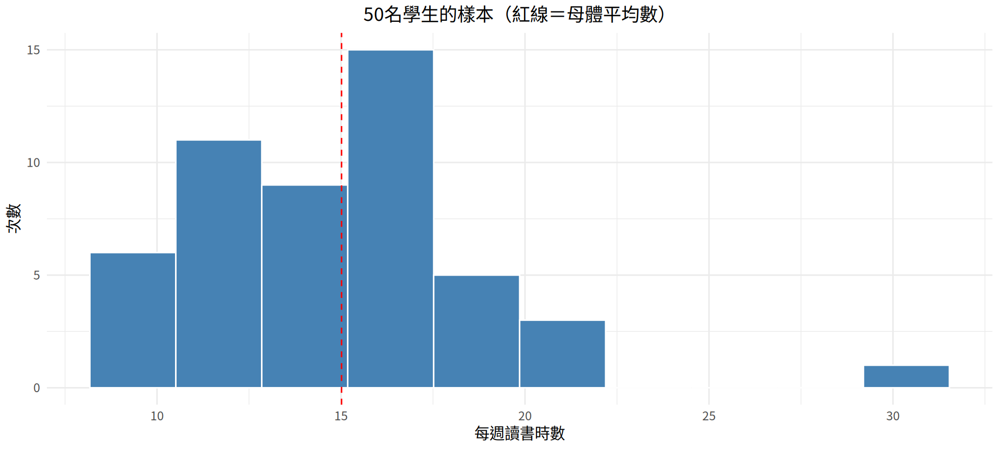
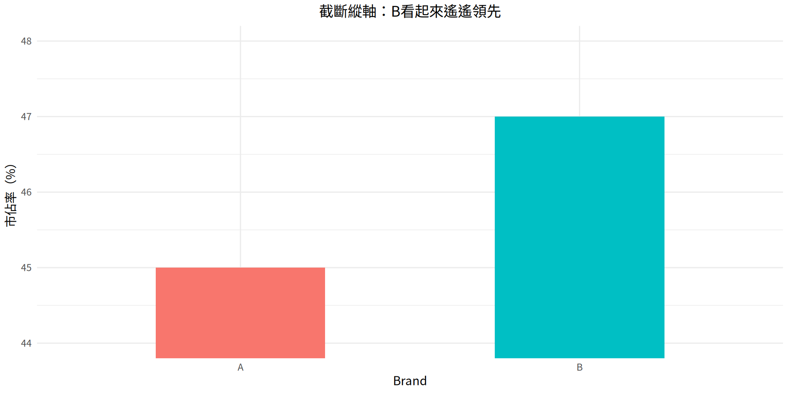
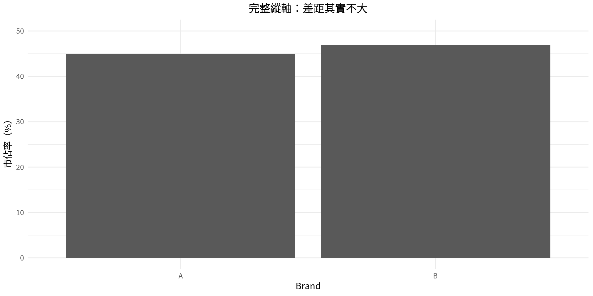
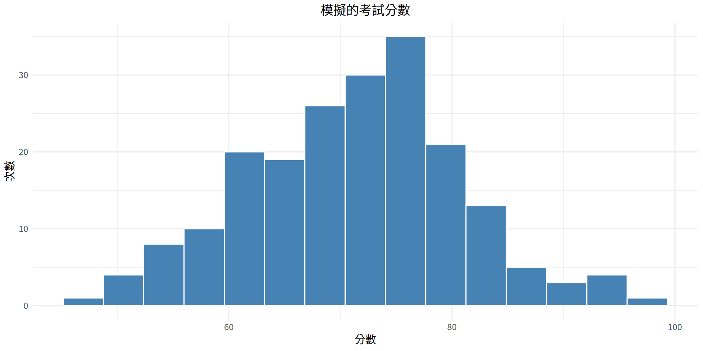

母體平均數（參數） 樣本平均數（統計量）
15.01470 14.81155 統計學
第1章：機率與統計的本質
劉昱佑
實踐大學
2026-09-20
本章概覽
第1章介紹統計學的基本性質——統計學是什麼、處理哪些類型的資料、資料如何收集、研究如何設計，以及統計結果可能被如何正確使用或誤用。
| 節次 | 主題 |
|---|---|
| 1-1 | 敘述統計與推論統計 |
| 1-2 | 變數與資料類型 |
| 1-3 | 資料收集與抽樣方法 |
| 1-4 | 實驗設計（觀察性研究與實驗性研究；統計的使用與誤用） |
| 1-5 | 電腦與計算機 |
本章學習目標
讀完本章後，你應該能夠
- 掌握統計學的基本術語。
- 分辨統計學的兩大分支。
- 辨識資料的類型。
- 判斷每個變數的測量尺度。
- 說出四種基本抽樣方法。
- 說明觀察性研究與實驗性研究的差別。
- 說明統計如何被正確使用與誤用。
- 說明電腦與計算機在統計上的重要性。
第1-1節：敘述統計與推論統計
什麼是統計學？
統計無所不在——運動紀錄、民意調查、醫學發現、失業率、天氣預報。這些都從資料開始：先收集數值，加以整理之後，它們才能說明任何事情。
統計學
統計學是一門進行研究的科學，用來收集、整理、彙總、分析並從資料中得出結論。
學習統計學的三個理由：
- 能讀懂並理解自己專業領域中的各種統計研究，這需要熟悉其中的術語、符號、概念與統計程序。
- 能從事研究——設計實驗，收集、整理、分析與彙總資料，做出預測，並用自己的話說明研究結果。
- 能成為更好的消費者與公民——依據消費研究決定要買什麼產品，依據使用狀況研究判斷政府支出是否合理。
基本術語
變數與資料
- 變數是可以取不同數值的特徵或屬性。
- 資料是變數所取到的值（測量值或觀測值）。
- 一組資料值構成資料集；資料集中的每一個值稱為資料值（或資料點）。
- 取值由機遇決定的變數稱為隨機變數。
保險公司無法預測承保的哪一輛車會發生事故，但它知道平均而言每 100 輛承保車輛中每年約有 3 輛出事。個別事件由機遇決定，長期的規律卻穩定到足以據以訂定保費。
母體與樣本
多數研究不可能、也不切實際去檢視所有感興趣的對象，因此研究者只研究其中一個子群，再據以推論。
母體、普查與樣本
- 母體是所有被研究的對象（人或其他）的全體。
- 當資料是從母體中每一個對象收集而來時，稱為普查。
- 樣本是從母體中選取出來的一群對象。
偏誤
若樣本的結果與普查的結果差距極大，或樣本無法代表其所來自的母體，就稱這個樣本有偏誤。如何正確選取樣本，是第1-3節的主題。
統計學的兩大分支
敘述統計
敘述統計包含資料的收集、整理、彙總與呈現。
推論統計
推論統計包含由樣本推論到母體、進行估計與假設檢定、判斷變數之間的關係，以及做出預測。
機率與假設檢定
推論統計建立在機率理論之上。
- 機率是某事件發生的可能性，是描述不確定性的數學語言（第4章）。
- 假設檢定是一套決策程序，根據樣本所得的資訊來評估關於母體的主張（第8章）。
推論統計也用來判斷變數之間的關係。一份具里程碑意義的公共衛生報告指出，吸菸與肺癌之間確實存在關係——注意，報告說的是「有關係」，而不是吸菸「造成」肺癌；從資料中找到的關聯，本身並不等於因果證據。統計學家也利用過去與現在的資料做預測，例如車商依去年同月的銷售紀錄決定今年要進哪些車、各進多少。
範例 1-1
敘述統計或推論統計
判斷下列各敘述使用的是敘述統計還是推論統計。（模擬資料）
- 上學期校園外送平台的 4800 筆訂單中，有加點飲料的訂單平均比沒有加點的晚 4 分鐘送達。
- 每六位超商顧客就有一位在早上 8 點前買熱飲，其中約三分之一的人還會再買一份麵包。
- 預估今年夏天將有三百萬名旅客經由本國主要國際機場出入境。
- 在全島發布颱風警報當天，某物流中心出貨的 1200 件包裹中，只有 185 件在承諾的 24 小時內送達。
範例 1-1
解題
解答
| 敘述 | 分支 | 理由 |
|---|---|---|
| a | 敘述統計 | 只彙總實際觀察到的 4800 筆訂單 |
| b | 推論統計 | 對全體超商顧客所做的概化 |
| c | 推論統計 | 對尚未觀察到的母體所做的預測 |
| d | 敘述統計 | 只彙總 1200 件包裹這個樣本的結果 |
詮釋
當一個數字只是彙總實際收集到的資料時，它屬於敘述統計。當它超出資料本身——推論到母體、進行預測或檢定主張——時，它屬於推論統計。
以 R 看母體與樣本
準備資料
某大學有 10,000 名學生。我們想知道全部學生每週的平均讀書時數（參數），但只能調查其中 50 人（得到統計量）。
以 R 看母體與樣本
輸出圖形
樣本平均數接近但不完全等於母體平均數。利用統計量對參數下結論，正是推論統計的核心；兩者之間的差距就是抽樣誤差（第1-3節）。

第1-2節：變數與資料類型
變數的分類
變數首先分為質性與量化兩類；量化變數再進一步分為離散與連續。
| 質性變數 | 不同的類別：性別、宗教信仰、居住地區 |
| 量化——離散 | 可數的值：家庭子女數、班級人數、每日來電次數 |
| 量化——連續 | 測量的值：身高、體重、溫度、時間 |
質性變數與量化變數
質性變數
質性變數是依某種特徵或屬性而具有不同類別的變數。
量化變數
量化變數是可以計數或測量的變數。
性別、宗教信仰與居住地區屬於質性變數。年齡、身高、體重與體溫屬於量化變數——它們是數值，而且可以依其值排序。
離散變數與連續變數
離散變數
離散變數所取的值是可以數出來的，例如 0、1、2、3。例子：家庭中的子女數、教室中的學生人數、客服中心每日接到的電話數。
連續變數
連續變數在任意兩個特定值之間可以取無限多個值。它們是測量得到的，常帶有分數與小數。例子：溫度。
範例 1-2
離散資料或連續資料
判斷下列各變數是離散變數還是連續變數。
- 外送員在餐廳等待訂單備妥所花的分鐘數
- 某承攬業者每月承攬的貨櫃數
- 顧客在單筆網購訂單上花的金額
- 裝上配送車的各件包裹重量
範例 1-2
解題
解答
| 變數 | 類型 | 理由 |
|---|---|---|
| a. 在餐廳的等待時間 | 連續 | 時間是測量出來的 |
| b. 每月貨櫃數 | 離散 | 貨櫃數是數出來的 |
| c. 單筆訂單花費 | 離散 | 金錢的最小單位是分，可以數 |
| d. 包裹重量 | 連續 | 重量是測量出來的 |
詮釋
只要問一個問題：這個值是數出來的還是量出來的？數出來的是離散，量出來的是連續。學生最常答錯的是金錢——它以「分」為單位計數，因此是離散。
連續變數的界限
測量工具有極限，因此連續資料必須四捨五入。記錄下來的值其實代表它在四捨五入之前可能落在的一整個組。
界限規則
一個數值的界限，是該資料值在被四捨五入之前所會歸屬的組：
\text{界限} = \text{記錄值} \pm \tfrac{1}{2}\,(\text{測量單位})
連續變數的界限會比記錄值多一位小數，而且末位一定是 5。界限寫成 72.5–73.5，意思是從 72.5 起、但不包含 73.5 的所有值。
表 1-1：記錄值與其界限
| 變數 | 記錄值 | 界限 |
|---|---|---|
| 長度 | 15 公分（cm） | 14.5–15.5 cm |
| 溫度 | 86 華氏度（^\circF） | 85.5–86.5^\circF |
| 時間 | 0.43 秒（sec） | 0.425–0.435 sec |
| 質量 | 1.6 公克（g） | 1.55–1.65 g |
記錄為 73 英吋的身高，實際上可能是 72.5 起、但不包含 73.5 的任何值。若實際值恰為 73.5，會被四捨五入為 74，歸入 73.5–74.5 這一組。
範例 1-3
組界限
求下列各測量值的界限。（模擬資料）
- 18.6 分鐘
- 245 公克
- 3.75 公里
範例 1-3
解題
解答
| Recorded | Unit | Lower | Upper |
|---|---|---|---|
| 18.60 | 0.10 | 18.550 | 18.650 |
| 245.00 | 1.00 | 244.500 | 245.500 |
| 3.75 | 0.01 | 3.745 | 3.755 |
- 18.55–18.65 分鐘 b. 244.5–245.5 公克 c. 3.745–3.755 公里
範例 1-3
解題
詮釋
每個記錄值其實代表界限之間的區間。注意每個界限都比記錄值多一位小數、且末位為 5。第2章建立分組次數分配時會再用到界限。
四種測量尺度
變數也可依如何被分類、計數或測量來區分，這種分類使用測量尺度，常見的有四種。
測量尺度
- 名目尺度——把資料分成互斥（不重疊）的類別，資料之間無法排序或排名。
- 順序尺度——把資料分成可以排名的類別，但各名次之間的精確差距並不存在。
- 區間尺度——資料可以排名，各測量單位之間有精確的差距，但沒有有意義的零點。
- 比率尺度——具備區間尺度的所有性質，而且存在真正的零點；數值之間存在真正的比率。
表 1-2：各測量尺度的例子
| 名目尺度 | 順序尺度 | 區間尺度 | 比率尺度 |
|---|---|---|---|
| 郵遞區號 | 成績（A、B、C、D、F） | SAT 分數 | 身高 |
| 性別 | 名次（第一名、第二名……） | IQ | 體重 |
| 眼睛顏色（藍、棕、綠、褐） | 評分等級（差、好、優） | 溫度 | 時間 |
| 政黨傾向 | 網球選手排名 | 薪資 | |
| 宗教信仰 | 年齡 | ||
| 主修領域（數學、資訊……） | |||
| 國籍 |
四種尺度的比較
| 尺度 | 可排序？ | 有精確差距？ | 有真正零點？ |
|---|---|---|---|
| 名目 | 否 | 否 | 否 |
| 順序 | 是 | 否 | 否 |
| 區間 | 是 | 是 | 否 |
| 比率 | 是 | 是 | 是 |
IQ 測驗並不是在測量「沒有智力」的人，0^\circF 也不代表完全沒有熱量——兩者都是區間尺度。若甲能舉起 200 磅、乙能舉起 100 磅，兩者的比是 2 比 1——體重是比率尺度。
注意
統計學家對這套分類並沒有完全一致的看法。有些研究者把 IQ 歸為比率而非區間。資料也可以被改寫成另一種尺度：若把教授的所得分成低、中、高三組，比率變數就變成順序變數。
範例 1-4
測量尺度
下列各變數應使用哪一種測量尺度？
- 某咖啡連鎖店各分店的月營收
- 超商顧客選用的付款方式
- 某冷凍倉儲 1 月份夜間的最低溫度
- 旅館房客給的滿意度評等
範例 1-4
解題
解答
| 變數 | 尺度 | 理由 |
|---|---|---|
| a. 分店月營收 | 比率 | 有真正零點，比率有意義 |
| b. 付款方式 | 名目 | 只是類別，無法排序 |
| c. 夜間最低溫度 | 區間 | 差距精確，但無真正零點 |
| d. 房客滿意度評等 | 順序 | 可排名，但差距不精確 |
詮釋
測量尺度限制了哪些統計方法是合理的——例如計算平均數，至少需要區間尺度的資料。
以 R 表示測量尺度
R 透過資料型別來區分這四種尺度：
Factor w/ 3 levels "104","220","804": 1 2 3 Ord.factor w/ 3 levels "poor"<"good"<..: 1 2 3 num [1:3] 109 110 125 num [1:3] 150 180 205名目資料存成無序的 factor，順序資料存成有序的 factor，區間與比率資料則存成 numeric。
第1-3節：資料收集與抽樣方法
資料如何收集？
最常見的資料收集方式之一是問卷調查，最常用的三種形式是電話訪問、郵寄問卷與親身訪談；資料也可以透過查閱既有紀錄或直接觀察取得。
| 調查方式 | 優點 | 缺點 |
|---|---|---|
| 電話訪問 | 成本低於親身訪談；受訪者可能更坦白 | 有些人沒有電話或不接電話；需納入未登錄號碼與手機號碼；訪員語氣可能影響回答 |
| 郵寄問卷 | 可涵蓋廣大地理範圍；成本較低；可匿名 | 回收率低；受訪者可能誤解題意 |
| 親身訪談 | 可取得深入的回答 | 成本高；訪員需受訓；可能有訪員偏誤 |
為什麼要抽樣？
研究整個母體通常不可行，原因包括成本、時間、母體規模或醫學上的顧慮，因此研究者改用樣本，並設法讓樣本沒有偏誤。
四種基本抽樣方法是簡單隨機、系統、分層與群集。以下用一份 500 人的學生名冊示範。
隨機抽樣
隨機樣本
隨機樣本的選取方式，要讓母體中每一個成員被選中的機會相等，通常以亂數決定。
早期的亂數來自印好的亂數表（課本的 Table D）；今日則由軟體產生。
系統抽樣
系統樣本
系統樣本先把母體從 1 編號到 N，在 1 到 k 之間隨機選出第一個對象，之後每隔 k 個取一個，其中 k \approx N/n。
[1] 33 83 133 183 233 283 333 383 433 483注意：若母體名冊本身有與 k 吻合的週期性規律，樣本會產生嚴重偏誤。
分層抽樣
分層樣本
分層樣本先把母體分成若干層——層內成員性質相近——再在每一層之內隨機抽取對象。
群集抽樣
群集樣本
群集樣本先依地理區域、學校之類的方式把母體分成若干群集，隨機選出其中幾個群集，再把被選中群集的全部成員都納為樣本。
假設母體住在 10 棟公寓、每棟各有 20 位住戶。隨機選出其中 2 棟，並訪問這 2 棟的全部住戶。
[1] 5 10
5 10
20 20 當母體很大或分布在廣大區域時，群集抽樣可以省時省錢，但有時某個群集並不能代表母體。
分層抽樣與群集抽樣的差別
關鍵差異
兩種方法都把母體分組，但
- 分層抽樣的組內成員是同質的——他們共有某項特徵——而且每一層都要抽；
- 群集抽樣的每一組都是一個「縮小版的母體」，組內差異與母體一樣大，而且是整組整組地抽。
若要研究大一學生，一個新生輔導班可以當作一個群集；若依主修、性別、年齡把大一學生分組，得到的則是層。
表 1-3：四種抽樣方法摘要
| 方法 | 對象如何選出 |
|---|---|
| 隨機 | 以亂數選取對象 |
| 系統 | 先在 1 到 k 中隨機選出第一個對象，之後每隔 k 個取一個 |
| 分層 | 把母體分成若干子群（層），在各層內隨機選取對象 |
| 群集 | 選取能代表母體的完整子群 |
其他技術——逐次抽樣、二重抽樣與多階段抽樣——在第14章說明。
其他抽樣方法
便利樣本
便利樣本選取的是方便取得的對象，例如在某家購物中心入口訪問進場的顧客。這種樣本常常不具代表性；但若研究者確認過母體特性並判定樣本具代表性，仍可使用。
自願（自選）樣本
在自願樣本或自選樣本中，是否被納入由受訪者自己決定，例如廣播電台的叩應民調。通常只有意見強烈的人才會回應，因此這類民調不是科學性的調查。
抽樣誤差與非抽樣誤差
樣本永遠不是母體的完美代表，因此結果一定帶有誤差。
抽樣誤差
抽樣誤差是由樣本得到的結果，與由樣本所來自的母體得到的結果之間的差距。
非抽樣誤差
非抽樣誤差發生在資料取得過程有誤，或樣本有偏誤（不具代表性）的時候。
若樣本中全職學生有 56% 是女性，而教務處的普查資料是 54%，這 2% 的落差就是抽樣誤差。磅秤故障使每次量測都多 2 磅，或研究者抄錯數值，則屬非抽樣誤差。
範例 1-5
抽樣方法
指出下列各情境使用的是哪一種抽樣方法。
- 某物流公司有 18 座物流中心，研究者選出其中一座，記錄該中心一天之內處理的全部包裹。
- 研究者先把國際貿易學程的學生依年級分開，再依是否有海外交換經驗細分，然後從每一組中各取 8 名學生填寫問卷。
- 研究者把超市會員的 6000 名會員編號，以亂數選出 400 名會員，記錄他們 3 月份的消費金額。
- 在包裝線上，每第 25 盒茶葉禮盒被抽出來檢查封口是否破損。
範例 1-5
解題
解答
| 情境 | 方法 | 判斷依據 |
|---|---|---|
| a | 群集 | 選出一整座物流中心，並記錄其中全部資料 |
| b | 分層 | 先分成子群，再在各子群內抽取 |
| c | 隨機 | 以亂數抽取，每位會員機會相等 |
| d | 系統 | 隨機起點後每隔 25 個取一個 |
詮釋
三個問題就能判斷：抽的是整組還是個別對象？有沒有用到機遇？是在子群內抽，還是整個子群一起抽？
第1-4節：實驗設計
觀察性研究
觀察性研究
在觀察性研究中，研究者只是觀察正在發生或過去已發生的事，並依據這些觀察試著得出結論。
觀察性研究的三種型態
- 橫斷面研究——所有資料在同一個時點收集。
- 回溯性研究——資料取自過去的紀錄。
- 縱貫性研究——資料在一段期間內收集，涵蓋過去與現在。
觀察性研究的優缺點
優點。 通常發生在自然情境中；可以研究那些做實驗會不合倫理或有危險的題目（自殺、藥物濫用）；也可以使用研究者無法操弄的變數，例如慣用右手與慣用左手。
缺點。 因為變數不受控制，無法確立明確的因果關係；研究可能昂貴且耗時；而且當測量不是研究者親自進行時，結果會受到實際收集資料者的誤差影響。
實驗性研究
實驗性研究
在實驗性研究中，研究者操弄其中一個變數，試著判斷這個操弄如何影響其他變數。
某超商連鎖在旗下 40 家門市進行為期四週的試驗。其中 20 家門市的店員維持平常的招呼方式；另外 20 家門市的店員則在結帳時多念一句咖啡加麵包的組合優惠。試驗期間，前者平均每天賣出 18 組，後者平均 27 組。因為研究者介入了——操弄了結帳時使用的話術——所以這是一項實驗。（模擬資料）
準實驗性研究
當無法隨機分派、研究者只能使用現成的完整群體（例如既有的班級）時，這樣的研究稱為準實驗性研究。此時處理仍應隨機分派。
實驗中的變數
自變數與依變數
- 實驗性研究中被研究者操弄的變數稱為自變數，也稱為解釋變數。
- 隨之產生的結果變數稱為依變數或結果變數。
實驗組與對照組
接受處理的對象構成實驗組；未接受處理的構成對照組。對照組可能接受安慰劑——一種既無療效也無害的物質。
在結帳話術的研究中，自變數是結帳時使用的話術，依變數是賣出的組合優惠數量。
實驗性研究的缺點
實驗可能發生在不自然的情境中，例如實驗室或特別安排的教室，結果未必適用於自然情境——「這款漱口水在試管裡殺死一萬個細菌，但在我嘴裡能殺死幾個？」
霍桑效應
霍桑效應在 1924 年西方電器公司霍桑廠的工人研究中被發現：知道自己正在參與實驗的受試者會改變行為，進而影響研究結果。
干擾變數
干擾變數
干擾變數（也稱潛伏變數）會影響依變數或結果變數，但無法與自變數分離。
被安排進入運動計畫的受試者，可能在研究者不知情的情況下同時改善了飲食，因而透過運動以外的途徑改善了健康。此時飲食就是干擾變數。
閱讀研究結果時，先判斷它是觀察性還是實驗性，再問結論是否能由這樣的設計合理推得。
安慰劑效應與盲法
安慰劑效應
安慰劑效應指受試者只因為被選入研究，或因為察覺到研究者無意中透露的線索，而回報好轉或出現改善。
某旅館連鎖告訴 150 位房客，他們的房間已加裝新的助眠設備。三組當中有兩組確實有加裝——一組換了特製枕頭，一組加了隔音窗簾——第三組則完全沒有更動。一週後，三組回報睡得比平常好的比例完全相同。（模擬資料）
盲法與雙盲
在盲法中，受試者不知道自己拿到的是真正的處理還是安慰劑。在雙盲中，受試者與研究者都不知道哪一組拿到安慰劑。
區集、隨機化與配對
區集
當研究者懷疑兩個以上的區集之間會有差異時，可用區集來降低變異。在結帳話術的研究中，若商辦區門市與住宅區門市的反應可能不同，就把門市分成兩個區集，再在各區集內隨機分派話術。
完全隨機設計與配對設計
- 當受試者被隨機分組、處理也隨機分派時，這樣的實驗稱為完全隨機設計。
- 在配對設計中，先依年齡、身高、體重等特徵把受試者兩兩配對（早期研究使用同卵雙胞胎），再把每一對中的一人分到實驗組、一人分到對照組。
重複驗證與互相矛盾的研究
重複驗證
重複驗證是在另一個地區、另一間實驗室，或改用不同的受試者重做同一個實驗，再把結果與原研究比較。
同一主題的兩項研究有時會得到相反的結論。某超市連鎖的一項研究指出，導入自助結帳的門市流失了常客；後來另一項針對同一連鎖的研究卻指出，導入自助結帳的門市反而增加了常客。答案藏在細節裡：前者看的是把人工結帳櫃檯全部換成自助結帳的門市，後者看的是保留人工結帳櫃檯、另外加設自助結帳的門市。同一個說法指的其實是兩件不同的事。做決定之前，先把事實弄清楚。（模擬資料）
統計研究的步驟
一般程序
- 界定研究目的。
- 確認研究中的變數。
- 定義母體。
- 決定收集資料所用的抽樣方法。
- 收集資料。
- 彙總資料並進行必要的統計計算。
- 詮釋結果。
範例 1-6
實驗設計
研究者把 12 名網購顧客隨機分派到三個組。第 1 組看到的商品頁面完全沒有配送資訊，第 2 組看到的頁面標示「兩日到貨」，第 3 組看到的頁面標示「當日到貨」。看完後，每位顧客以 1 到 10 分評估自己購買該商品的意願。研究者發現，看到「當日到貨」的人給的分數最高。結論是：標示更快的配送承諾會讓顧客更願意購買。（模擬資料）
- 這是觀察性研究還是實驗性研究？
- 自變數是什麼？
- 依變數是什麼？
- 這項研究中可能的干擾變數是什麼？
- 對樣本數你可以說什麼？
- 你同意這個結論嗎？
範例 1-6
解題
解答
- 實驗性研究，因為變數（頁面上標示的配送承諾）被操弄了。
- 自變數是商品頁面上標示的配送承諾。
- 依變數是購買意願評分。
- 所得、網購經驗與對該平台的熟悉度等其他因素都可能影響結果；不過隨機分派有助於消除這些因素。
- 本研究共使用 36 名受試者。
- 答案因人而異。
以 R 進行隨機分派
準備資料
把 20 名受試者隨機分派到實驗組與對照組：
以 R 進行隨機分派
輸出結果
| Group | Subjects |
|---|---|
| Treatment | 1, 2, 4, 5, 7, 8, 10, 17, 18, 20 |
| Control | 3, 6, 9, 11, 12, 13, 14, 15, 16, 19 |
隨機化同時平衡了我們看得見的變數與看不見的變數，這正是完全隨機設計能支持因果結論的原因。
統計的使用與誤用
統計方法可以描述資料、比較資料集、偵測關係、檢定假設、估計母體特性；但它也可能被誤用——用來推銷無效的產品、把假的說成真的，或用來製造恐懼、震驚與憤怒。
兩句老話說明了這一點：「謊言有三種——謊言、該死的謊言，以及統計數字。」以及「數字不會說謊，但說謊的人會算數字。」記者常略去樣本數或受訪者如何選出等關鍵資訊。
七種常見的誤導方式
- 可疑的樣本
- 模稜兩可的平均
- 偷換說法
- 沒有比較對象的統計數字
- 暗示性的關聯
- 誤導的圖形
- 有瑕疵的問卷題目
可疑的樣本與模稜兩可的平均
可疑的樣本。 先看樣本。「受訪醫師中每四人有三人推薦某某品牌」——若只訪問了 4 位醫師，這個結果可能純屬巧合；若訪問了 100 位，多半就不是。也要看對象如何選出：自願樣本、便利樣本、只用大學生或只用退休者的研究，以及叩應民調，都帶有先天的偏誤。
模稜兩可的平均。 有四個量數都被籠統地稱為「平均」——平均數、中位數、眾數與中程數（第3章）。對同一組資料，它們可能差距很大，於是寫的人可以不說謊卻挑出最有利於自己立場的那一個。
偷換說法與沒有比較對象的統計數字
偷換說法。 用不同的數值表示同一筆資料。一位候選人說支出「只增加了 3%」；對手說支出「暴增了 600 萬美元」。兩個數字都正確。該問的是：哪一個比較能代表這筆資料？
沒有比較對象的統計數字。 沒有做任何比較：「本品牌餅乾熱量少三分之一。」比什麼少三分之一？「A 牌阿斯匹靈見效快四倍。」比什麼快四倍？永遠要追問：跟什麼比？
暗示性的關聯與有瑕疵的問卷題目
暗示性的關聯。 廣告暗示其實不存在的關係：「吃魚可能有助於降低膽固醇。」「研究顯示使用本健身器材可以減重。」「補充鈣質可以降低某些人的血壓。」請特別留意可能、顯示、或許有助於、某些人這類措詞。
有瑕疵的問卷題目。 問法一改，答案就變：
- 「你認為北杭廷頓學區應該興建新的美式足球場嗎？」對比
- 「你贊成調高學區稅，好讓北杭廷頓學區興建新的美式足球場嗎？」
第14章會再回到問卷題目被誤解的各種情形。
誤導的圖形
誤導的圖形。 圖形讓資料更容易被詮釋，但畫法不當的圖形會扭曲資料，使讀者得到錯誤的結論。第2章會詳細討論。以下用一個例子示範。
誤導的圖形
繪製圖形——誤導版

誤導的圖形
繪製圖形——誠實版

誤導的圖形
注意
兩張圖畫的是完全相同的數字，但截斷的縱軸讓 B 品牌 2 個百分點的領先看起來像壓倒性勝利。看圖時請檢查：
- 數值軸是否從零開始？
- 軸上的刻度是否等距？
- 圖案符號是依面積或體積縮放，還是只依高度？
第1-5節：電腦與計算機
電腦與計算機的角色
過去統計計算靠紙筆完成。計算機讓數值運算容易許多，而電腦現在包辦了所有數值工作：輸入資料、下對指令，答案就出現了。TI-84 Plus 繪圖計算機也能做同樣的事。
課本在 Technology Step by Step 小節中示範 Excel、MINITAB 與 TI-84 Plus。本課程全程使用 R。
機器不會思考
電腦與計算機只是給出數值答案，省下手算的工夫。理解與詮釋每一個統計概念的責任仍然在你身上。結果來自資料，不會神奇地出現在螢幕上。
初識 R
準備資料
初識 R
輸出圖形

本章重點
| 概念 | 要旨 |
|---|---|
| 敘述統計 | 收集、整理、彙總與呈現資料 |
| 推論統計 | 由樣本推論到母體 |
| 母體、普查、樣本 | 全體對象、對全體收集資料、從母體選出的一群對象 |
| 質性 vs. 量化 | 不同類別 vs. 可計數或可測量的值 |
| 離散 vs. 連續 | 數出來的值 vs. 量出來的值 |
本章重點
| 概念 | 要旨 |
|---|---|
| 測量尺度 | 名目、順序、區間、比率 |
| 抽樣方法 | 隨機、系統、分層、群集（另有便利與自願） |
| 抽樣誤差 vs. 非抽樣誤差 | 樣本與母體的落差 vs. 資料有誤或樣本有偏誤 |
| 觀察性 vs. 實驗性 | 只觀察 vs. 操弄並隨機化 |
| 統計的誤用 | 可疑樣本、模稜兩可的平均、誤導的圖形…… |
重要名詞
第1章詞彙
盲法 · 區集 · 界限 · 普查 · 群集樣本 · 完全隨機設計 · 干擾變數 · 連續變數 · 對照組 · 便利樣本 · 橫斷面研究 · 資料 · 資料集 · 資料值 · 依變數 · 敘述統計 · 離散變數 · 雙盲 · 實驗性研究 · 解釋變數 · 霍桑效應 · 假設檢定 · 自變數 · 推論統計 · 區間尺度 · 縱貫性研究 · 潛伏變數 · 配對設計 · 測量尺度 · 名目尺度 · 非抽樣誤差 · 觀察性研究 · 順序尺度 · 結果變數 · 安慰劑效應 · 母體 · 機率 · 質性變數 · 量化變數 · 準實驗性研究 · 隨機樣本 · 隨機變數 · 比率尺度 · 重複驗證 · 回溯性研究 · 樣本 · 抽樣誤差 · 統計學 · 分層樣本 · 系統樣本 · 實驗組 · 變數 · 自願樣本
重點整理
重點
- 統計學——進行研究以收集、整理、彙總、分析資料並得出結論的科學
- 變數／資料／資料集——特徵、其觀測值，以及這些值的集合
- 母體／普查／樣本——全體對象、對全體收集資料、從中選出的一群對象
- 敘述 vs. 推論——描述資料 vs. 由樣本推論
- 質性／量化；離散／連續——類別 vs. 可計數或可測量的值
- 名目／順序／區間／比率——四種測量尺度
- 隨機／系統／分層／群集——四種基本抽樣方法
- 抽樣誤差 vs. 非抽樣誤差——無法避免的落差 vs. 可以避免的錯誤
- 觀察性 vs. 實驗性 vs. 準實驗性——只有隨機化的實驗能支持因果主張
- 誤用——可疑樣本、模稜兩可的平均、沒有比較對象的統計數字、誤導的圖形
Acknowledgement
Copyright notice. These teaching materials follow the organization and terminology of Bluman, A. G. (2023). Elementary statistics: A step by step approach (11th ed.). McGraw Hill. All rights in the original work are reserved by its authors and publishers.
Original examples. Every worked example, data set, and R script in these slides was written for this course. The data are hypothetical unless stated otherwise.
Non-commercial use only. These materials are strictly intended for educational purposes and must not be used for commercial gain or profit.
Proper attribution. Any reproduction, distribution, or use of these materials must provide proper attribution to the original source.

Elementary Statistics: A Step by Step Approach